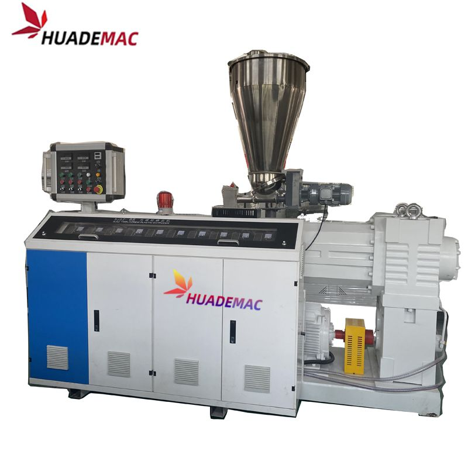
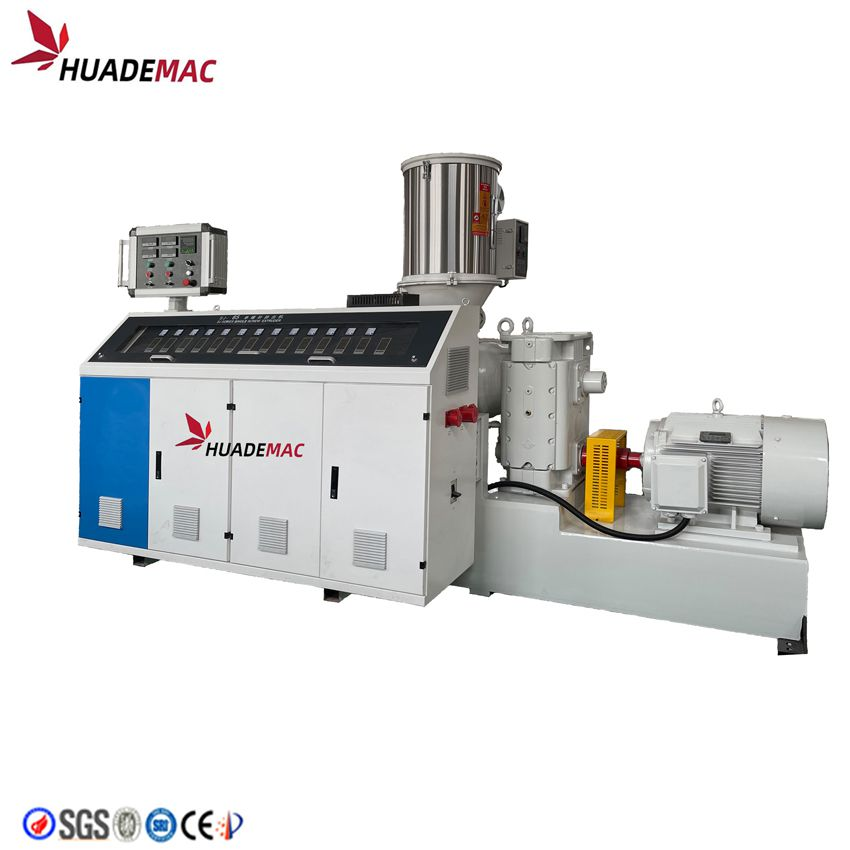
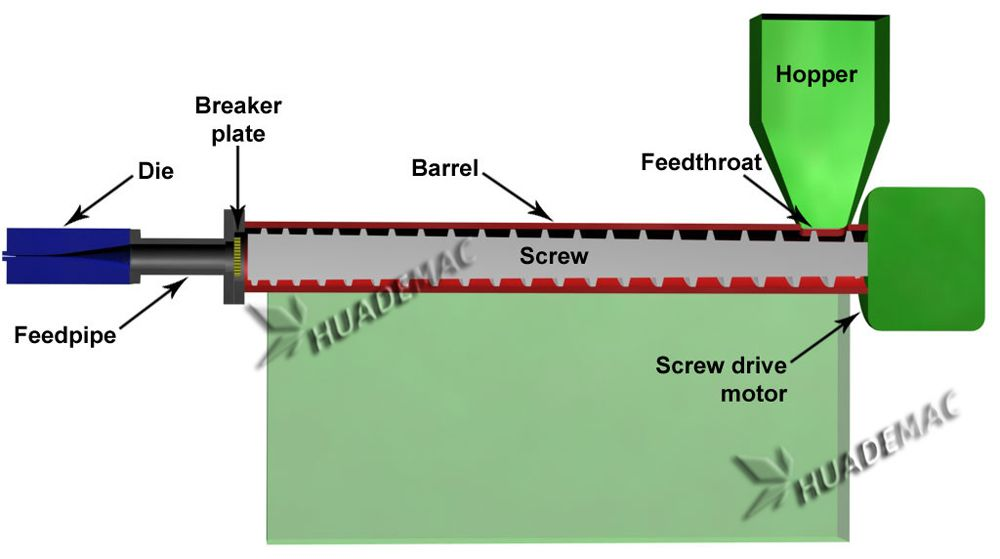

PP PE PPR Single Screw Extruder
Process PP, PE or PPR with a single-screw extruder matched to the downstream tooling.
Inquire about this product Prepare a detailed project brief
Equipment overview
It can process all kind of plastics products with auxiliary machines concerned, such as film, pipe, stick, plate, thread ,ribbon, insulating layer of cable, hollow products and so on .It is also used in graining. The machine design is advanced, production capacity is high, plasticization is good, and energy consumption is low. The extruder adopts hard gear surface for transmission. It has advantages of low noise, smooth operation, large loading, long use-life and so on.
Suitable screws: 25,30,45, 65, 75,90, 120, 150,
Controller: Normal, PID or PLC (optional)
Can be combined with various auxiliary machinery
Length / diameter ratio can be changed (suitable between 25: 1 - 38: 1)
Specially designed screw, high-torque decelerator and high power DC motor ensure good mixture of material and high output
More flexible processing range; it can be used for recycling, pelletizing, pipe, profile, board/sheet/film extrusion.
Advantages:
Lower specific energy consumption; energy saving could be up to 30% plus.
Higher capacity: the capacity could be 50% more at the same diameter
Higher efficiency in plastication.
Better mixing effect: it is comparable with normal twin screw extruder
More accuracy in extrusion processing control.
Technical specifications
Reference configurations from the product catalogue. Confirm output, dimensions and equipment selection for your material and project.
| Model | Screw diameter (mm) | L/D ratio | Main motor power (KW) | Capacity (kg/h) |
|---|---|---|---|---|
| SJ-25 | 45 | 25/1 | 2.2 | 5 |
| SJ-30 | 30 | 25/1 | 5.5 | 10 |
| SJ-45 | 45 | 25-33/1 | 7.3-37 | 50-150 |
| SJ-65 | 65 | 25-33/1 | 22-90 | 60-250 |
| SJ-75 | 75 | 25-33/1 | 55-110 | 200-350 |
| SJ-90 | 90 | 25-33/1 | 37-185 | 180-550 |
| SJ-120 | 120 | 25-33/1 | 75-280 | 320-800 |
| SJ-150 | 150 | 25-33/1 | 90-355 | 400-1200 |
Detailed Images
Extrusion Process
Plastics extrusion is a high-volume manufacturing process in which raw plastic is melted and formed into a continuous profile. With the development of economy, more and more plastics are used in people's daily life. Consequently, a large quantity of plastic extruder, plastic extrusion line, plastic extrusion machine are used to process PP, LLDPE, LDPE, HDPE, PVC, ABS, etc. in pipe extrusion, profile extrusion, filament extrusion, film extrusion, sheet extrusion and pelletizing.
We have focused on plastic machinery over 21 years with rich experience and strong technology .top quality and the turn-key service including installation , test running and training workers in your local factory . we are your trustworthy partner !

Equipment video
Ask about this machine
PP PE PPR Single Screw Extruder